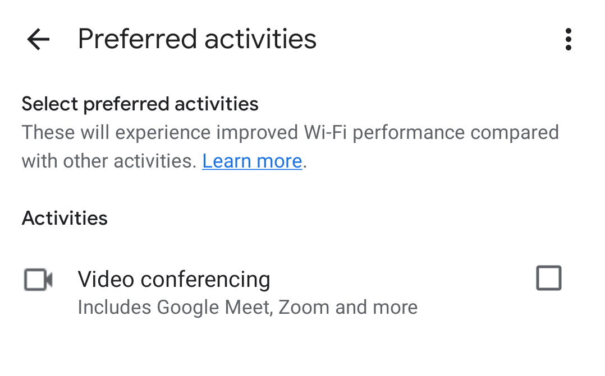

The short version of this post is that the “Preferred activities” feature in the Google Home app may have undesired results, and before tearing your hair out try turning it off to see if things improve. Read on for discussion.
The problem
I live a row house and, as it typical of row houses in the Northeast United States, it’s tall and deep, rather than wide. This always posed a problem for WiFi coverage–the router is in the front of the house where the cable comes in from the street, so by the time you reach the kitchen in the rear of the house, to say nothing of the second and third floors, the signal became weak or non-existent.
I solved this problem several years ago with three Google WiFi devices (“pucks”), spaced liberally throughout the house. One is in the living room with a wired upstream connection to the main router; the other two are placed about equidistant from the first and from each other. Together, they broadcast a single SSID that covers the whole house. It’s worked solidly for years, and I’ve been happy.
That is, until some time in the last year, when the home network developed some odd behaviors. I would notice that the outgoing internet felt sluggish, and third-party speedtests would confirm download speeds under 10 MB/s (at least a twentieth of what I’d expect). When I would load the Google Home app to check, it would report that both the mesh and outgoing connection were fine. The speed test would always report good speeds, and after running those tests the third-party tests would report the same. It was odd and maddening behavior and I’d fallen into a routine of running those tests every few days and occasionally Googling to see if anyone had a fix.
Solution
Googling for this was tricky; I like to say that searching requires good nouns, and “google wifi speed test slow” is going to turn up a lot of stuff that has nothing to do with the real issue. I did find other people who were experiencing the same issue, but as told in the story of DenverCoder9 the discussions petered out without a reliable resolution. Eventually I found a thread on the Google Nest Community forums which offered a tangible and plausible solution: Quality of Service (QoS) stealing all the bandwidth.
Google WiFi has a feature called “preferred activities” that lets you prioritize certain types of traffic on your home network. At the moment, the only supported category is “Video conferencing.” Google’s support page says this includes Google Meet, Zoom, MS team, Slack, GoToMeeting, and Webex. Given that there are devices in my house that use Slack constantly, I’m not sure if Slack’s meeting feature has to be active to trigger that functionality.
The feature is buried in the Home app: Home > Wi-Fi > Network settings > Preferred activities. Here’s what that screen looks like:

I unticked that box two weeks ago. Since then, my available bandwidth has remained consistent, and I certainly haven’t noticed any fall-off in call performance.